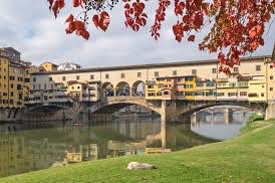
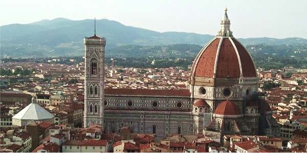
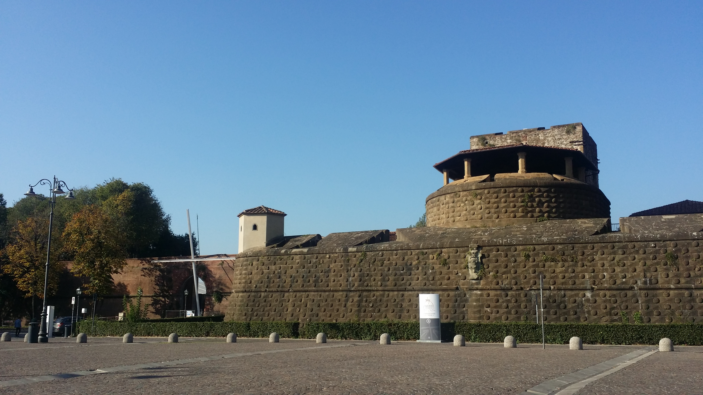
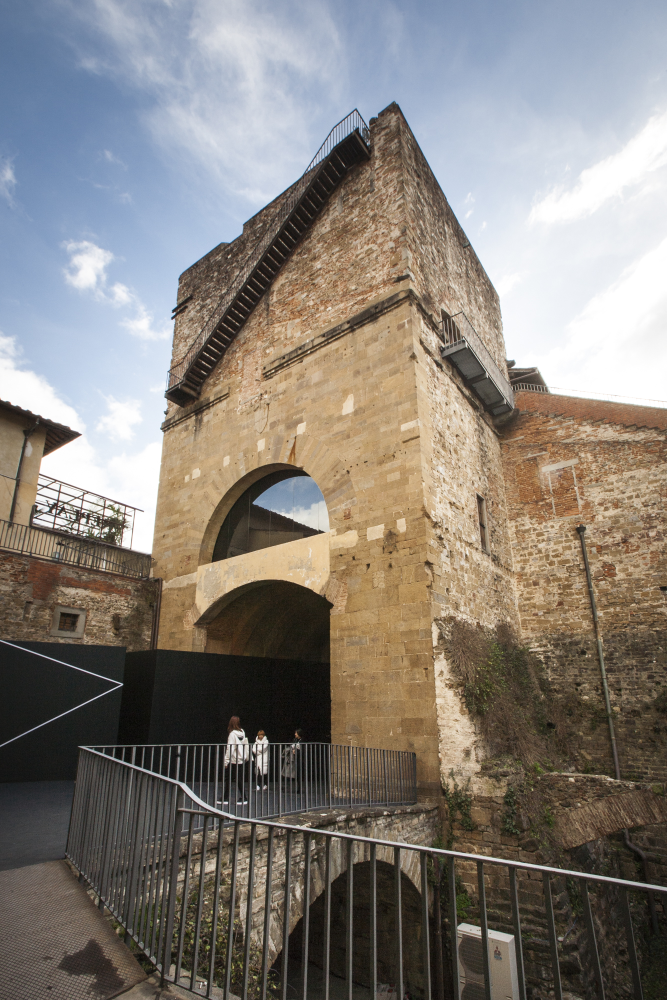

City of Florence
Florence, one of the most beautiful and visited art cities in the world, is an open-air museum, placed in the UNESCO’s World Heritage List in 1982.
 
ACL 2019 Annual Meeting will be held in one of the most beautiful cities in the world, an open sky museum famous worldwide, Florence.
Florence stands on the banks of the Arno River, in a hollow surrounded by the first Chianti hills to the south and the Fiesole hills to the north; these hills are green and undulating dotted with small towns and isolated home steads. As city of art and culture, Firenze is the destination of a high proportion of international tourism. Originally a Roman centre (Florentia), it began to acquire a certain importance under the Carolingians but its fortunes date from the time (1115) of its constitution as a Republic
In the 13th beginning 14th centuries, aided by increasing economic importance, Firenze starts a policy of expansion directed at the largest Tuscan towns. In 1406, once Pisa had fallen, only Siena and Lucca remained free of Florentine rule.
Shortly after (1434), the Republic became a ‘Signoria’ under the Medici family. Under this ‘Signoria’ the town gained great masterpieces by the foremost artists of the time (Brunelleschi, Donatello, Botticelli, Masaccio, etc.) becoming the most important European centre of Renaissance culture. When the Medici family died out, the Lorenas gained power in 1737 and, apart from the Napoleonic period (1800-1815), governed Firenze and the region until 1859, the year in which Duke Leopold II was expelled and Tuscany became part of the Kingdom of Italy.
Florence contains an exceptional artistic patrimony, glorious testimony to its secular civilization. Cimabue and Giotto, the fathers of Italian painting, lived here, along with Arnolfo and Andrea Pisano, reformists of architecture and sculpture; Brunelleschi, Donatello and Masaccio, founders of the Renaissance; Ghiberti and the Della Robbia; Filippo Lippi and l'Angelico; Botticelli and Paolo Uccello; the universal geniuses Leonardo da Vinci and Michelangelo.
Their works, along with those of many generations of artists up to the masters of the present century, are gathered in the city's many museums. In Firenze, thanks to Dante, the Italian language was born; with Petrarch and Boccaccio literary studies were affirmed; with Humanism the philosophy and values of classical civilization were revived; with Machiavelli modern political science was born; with Guicciardini, historical prose; and with Galileo, modern experimental science. Up to the time of Charlemagne, Firenze was a university town.
Today it includes many specialized institutes and is an international cultural center. Academies, art schools, scientific institutes and cultural centers all contribute to the city's intense activity.
Piazza Duomo is the religious centre of the city, featuring the Cathedral of Santa Maria del Fiore and the majestic Brunelleschi’s Dome, Giotto’s Bell Tower, and the Baptistery of St. John the Baptist, with its world renowned bronze gates. The square is surrounded by wonderful palaces, such as the Archbishop’s Palace, the 14th-century Loggia del Bigallo and the recently renovated Museo dell’Opera del Duomo (Museum of the Works of the Cathedral) which recreates the original sanctity of the 14th-century façade according to the first project by Arnolfo di Cambio with great technical virtuosity. The absolute masterpiece is the Deposition (or Florence Pietà) sculpted by Michelangelo for his own grave, in which Nicodemo, represented at the top centre, has his features. Some parts of this marble sculpture are unfinished, as Michelangelo often did in order to witness the spirit struggling to break free from matter. In 1555, in an outburst of rage, the same artist partially damaged this sculpture with a hammer.
Piazza della Signoria is the heart of the socio-political life, as well as the seat of civil power with Palazzo Vecchio (previously known as dei Priori and della Signoria). The square hosts important works of art such as the equestrian monument of Cosimo I de’ Medici, by Giambologna. Next to the palace, you can admire the fountain of Neptune by Bartolomeo Ammannati, also called the ‘Biancone’ due to the huge white marble statue of the sea god at the centre of the fountain, riding in a chariot roomed by four horses. In front of the main entrance of Palazzo Vecchio, you will find copies of two sculptures by Donatello: Marzocco (the lion symbolising the city of Florence) and Judith Beheading Holofernes, in addition to a copy of the David by Michelangelo, whose original statue is preserved inside the Galleria dell’Accademia (Gallery of the Academy of Florence). Next to David, the statue of Hercules and Cacus by Baccio Bandinelli, symbolises strength and ingenuity prevailing on evil.
On the right, facing Palazzo della Signoria, you will find the Uffizi Gallery, one of the most important museums in the world, which once hosted the offices and the state archives of the Grand-Duke. The museum boasts an incomparable collection of Italian and European art from the 13th century on. In addition to masterpieces by Cimabue, Giotto, Masaccio, Botticelli, Leonardo, Piero della Francesca, Michelangelo, Raphael, Titian, Caravaggio, Dürer, and many others, there is also a remarkable collection of ancient sculptures. The Vasarian Corridor is a spectacular elevated enclosed passageway, connecting Palazzo Vecchio with Palazzo Pitti and offering, from above Ponte Vecchio, a breath-taking view on monuments and on the Arno with its bridges. The corridor hosts a collection of self-portraits, in addition to an important 17th and 18th-century collection of paintings.
The Galleria dell’Accademia hosts the highest number of sculptures by Michelangelo, such as the Prisoners, St. Matthew and the famous David, in addition to important paintings from the second half of 13th century to the end of 16th century, as well as the Musical Instruments Museum. The National Museum of the Bargello, located inside a palace built in mid-13th century for the Capitano del Popolo (Captain of the People), boasts some of the most important statues of the Renaissance by Ghiberti, Donatello, Verrocchio, the Della Robbia family, Michelangelo, Giambologna, and others. Do not miss the prestigious collections of little bronze statues, maiolica, wax models, enamels, medals, ivory, tapestry, furniture, seals and textiles coming from the Medicean collections or donated by private collectors.
The Social program of the Meeting and post-congress tours will be able to fulfill great expectations!
CONFERENCE VENUE
The meeting will be held at the ‘Fortezza da Basso’, a 16th century fortess built by the Medici family, today it's perfectly restored and houses international congresses and fairs.
The main shareholders of the venue include: the Region of Tuscany, the Municipality, the Province and the Chamber of Commerce of Florence and the Municipality, the Province and the Chamber of Commerce of Prato as well as all the main trade associations of Florence.
 
Florence is located in the centre of Italy and thanks to the fast train networking, you can easily reach all the other Italian destinations. Conference delegates can get to Rome centre in 90 min, Milan in 100 min, Venice in 120 min, Naples in 150 min.
Closest international airports are: ‘Amerigo Vespucci’ (in Florence, 15 min from the city centre), ‘Galileo Galilei’ (in Pisa, 50 min from the city centre), ‘Guglielmo Marconi’ (in Bologna, 80 min by direct shuttle from Florence). Nearby airports: Rome Fiumicino (direct in 135 min by train). Moreover, Florence Airport is already very well connected with the main European hubs, with daily direct flights from the main European Destinations.
Florence is easy to reach, in the middle of Italy, an open sky museum with unique historical heritage, Mediterranean climate, good and healthy food. The meeting venue is centrally located: 75% of hotels within walking distance from the Conference Citadel.
The average temperature in July is around 28-35 °C.
Transportation in town is not needed because everything is within walking distance.